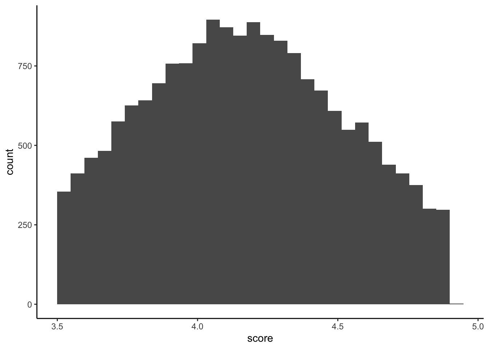

# list of packages needed
pkgs <- c('here', 'tidyverse', 'faux', 'modelsummary',
'fixest', 'tinytable', 'marginaleffects',
'truncnorm', 'lme4')
# install any needed packages
# install.packages(pkgs)
# load all packages at once
lapply(pkgs, library, character.only=TRUE)Simulated Grant Data
Overview
The code below attempts to create a simulated dataset for the purposes of evaluating how factors such as the level of expertise (high, medium, low, not enough) and role (reviewer, panelist) might impact overall scores.
The unit of observation is the application and basic structure attempts to mimic the multilevel nature of the review process for the CIHR Project Grant competitions. There are roughly 50 CIHR Committees, and each committee has around 25 or so members. In practice the number of total applications may vary quite a lot across committees (e.g., up to 50 for PH1 or PH2 when I was SO); however since we are focused on the evaluation of overall scores among those proposals discussed (i.e., excluding those streamlined), this is likely closer to 15 or so proposals per committee (again, my reference is PH committees).
In the code below we specify 50 committees, 15 discussed applications per committee, and 24 members per committee.
The code below is annotated with some simple coefficients for reviewer status and expertise (no interaction).
First, load the packages needed for this setup and analysis
Now we set up the basic parameters and multilevel structure for the simulated data. Note that since we are focused on those applications that are not streamlined and make it to discussion, the distribution of the overall score is truncated. CIHR places an upper limit of 4.9 for the highest ranking and in many cases a lower level of 3.5 is used (though not the only criteria) to draw the line below which applications are streamlined.
# set seed for reproducibility
set.seed(4875)
# define parameters
cmte_n = 50 # number of committees
app_n = 15 # number of discussed applications
mem_n = 24 # number of committee members
b0 = 4.1 # intercept for average score
b1 = 0.2 # fixed effect of panelist vs. reviewer
b2 = -0.1 # fixed effect of high expertise
b3 = 0.1 # fixed effect of low expertise
b4 = 0.2 # fixed effect of no expertise
u0c_sd = 0.1 # random intercept SD for committee
u0m_sd = 0.2 # random intercept SD for members
u0a_sd = 0.2 # random intercept SD for applications
sigma_sd = 0.2 # error SD for overall scores
score_min = 3.5 # lower bound for score
score_max = 4.9 # upper bound for score
# set up data structure
data <- add_random(committee = cmte_n,
application = app_n, member = mem_n) |>
# recode values for committee, application, and member
add_between("committee",
cmte = sprintf("%02d", 1:cmte_n)) |>
add_between("application",
app = 1:app_n) |>
add_between("member",
memno = sprintf("%02d", 1:mem_n)) |>
# create unique ID for each committee member
mutate(cid = paste0(cmte, "_", memno)) |>
# assign reviewers uniquely within each application
group_by(cmte, app) |>
mutate(
job = sample(c(rep("reviewer", 3),
rep("panelist", 21))),
# add expertise for each member
exp = sample(c(rep("high", 6),
rep("med", 10), rep("low", 4),
rep("none", 4)))) |>
ungroup() |>
# add indicators for reviewer, expertise
mutate(
panelist = if_else(job == "panelist", 1, 0),
exp_high = if_else(exp == "high", 1, 0),
exp_low = if_else(exp == "low", 1, 0),
exp_none = if_else(exp == "none", 1, 0)
) |>
# add random effects
add_ranef("cmte", u0c = u0c_sd) |>
add_ranef("member", u0m = u0m_sd) |>
add_ranef("application", u0a = u0a_sd) |>
add_ranef(sigma = sigma_sd) |>
# Compute score using a truncated normal distribution
mutate(
score = rtruncnorm(n(), a = score_min, b = score_max,
mean = b0 + u0c + u0m + u0a +
(b1 * panelist) + (b2 * exp_high) +
(b3 * exp_low) + (b4 * exp_none),
sd = sigma_sd)
) |>
# drop intermediate variables
select(-committee, -application, -member,
-u0c, -u0m, -u0a, -sigma)Here is a glimpse of the data structure:
tt(head(data))| cmte | app | memno | cid | job | exp | panelist | exp_high | exp_low | exp_none | score |
|---|---|---|---|---|---|---|---|---|---|---|
| 01 | 1 | 01 | 01_01 | panelist | none | 1 | 0 | 0 | 1 | 4.426219 |
| 01 | 1 | 02 | 01_02 | panelist | med | 1 | 0 | 0 | 0 | 4.491622 |
| 01 | 1 | 03 | 01_03 | panelist | med | 1 | 0 | 0 | 0 | 3.926662 |
| 01 | 1 | 04 | 01_04 | reviewer | none | 0 | 0 | 0 | 1 | 3.932127 |
| 01 | 1 | 05 | 01_05 | panelist | high | 1 | 1 | 0 | 0 | 3.956093 |
| 01 | 1 | 06 | 01_06 | panelist | low | 1 | 0 | 1 | 0 | 4.350588 |
And a simple histogram of the distribution of overall scores:
ggplot(data, aes(x = score)) + geom_histogram() +
theme_classic()
A simple set of models with random effects for committee, member, and application, and fixed effects for whether or not the score comes from a panelist and various levels of expertise (should probably be estimated by interval regression or some other way of accounting for the truncated distribution of the outcome, but later):
# empty
m0 <- lmer(score ~ 1 + (1 | cmte) + (1 | memno) +
(1 | app), data = data)
# add reviewer
m1 <- lmer(score ~ 1 + panelist + (1 | cmte) +
(1 | memno) + (1 | app), data = data)
# add expertise
m2 <- lmer(score ~ 1 + panelist + exp_high + exp_low +
exp_none + (1 | cmte) + (1 | memno) + (1 | app),
data = data)
modelsummary(list("Empty" = m0,
"+ Reviewer" = m1, "+ Expertise" = m2),
gof_omit = 'DF|Deviance|R2|AIC|BIC|RMSE',
escape = TRUE)| Empty | + Reviewer | + Expertise | |
|---|---|---|---|
| (Intercept) | 4.172 | 4.023 | 4.001 |
| (0.064) | (0.064) | (0.064) | |
| panelist | 0.171 | 0.170 | |
| (0.005) | (0.004) | ||
| exp_high | -0.083 | ||
| (0.004) | |||
| exp_low | 0.088 | ||
| (0.004) | |||
| exp_none | 0.176 | ||
| (0.004) | |||
| SD (Intercept cmte) | 0.078 | 0.078 | 0.078 |
| SD (Intercept memno) | 0.190 | 0.189 | 0.188 |
| SD (Intercept app) | 0.191 | 0.191 | 0.191 |
| SD (Observations) | 0.216 | 0.208 | 0.189 |
| Num.Obs. | 18000 | 18000 | 18000 |
| ICC | 0.6 | 0.6 | 0.7 |